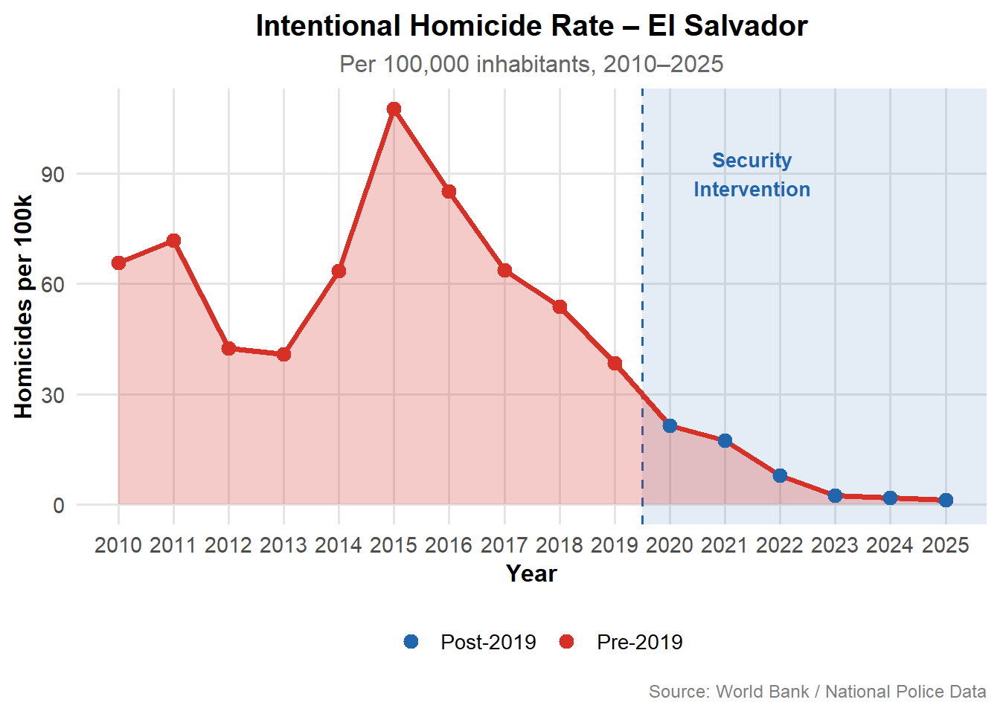
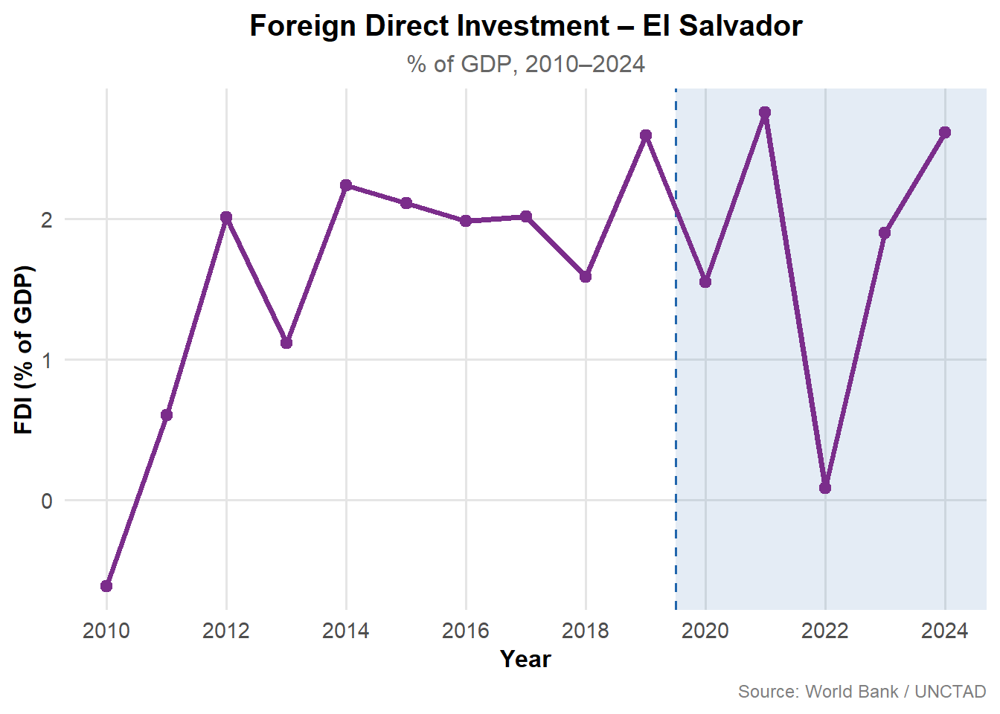
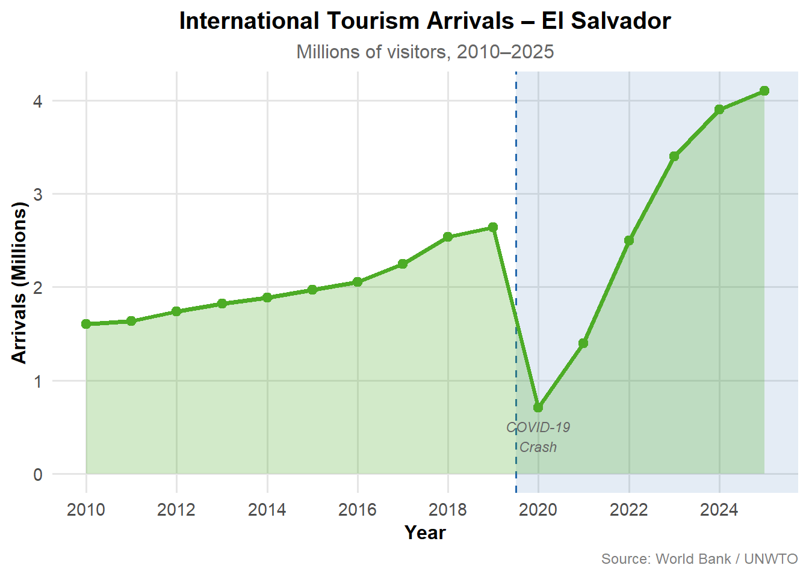
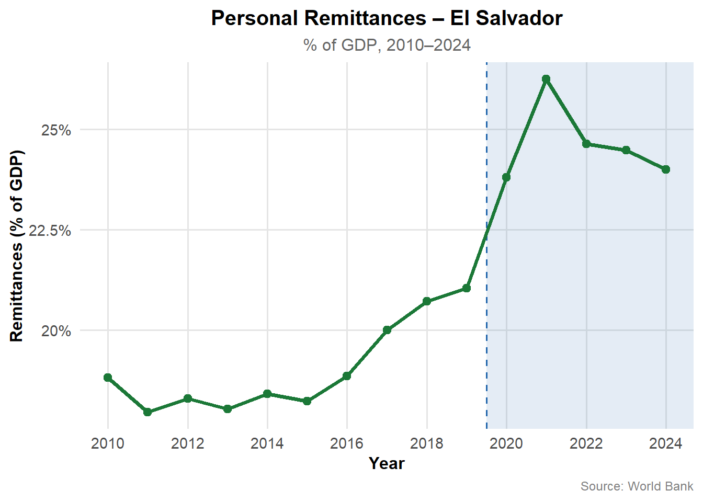
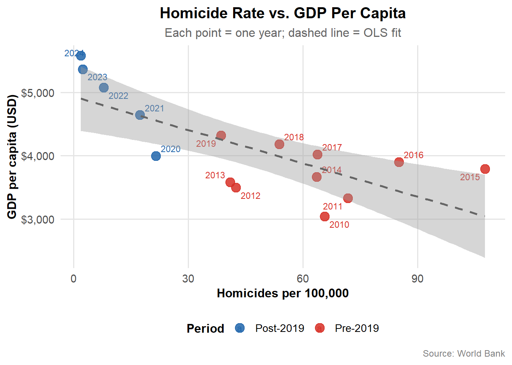
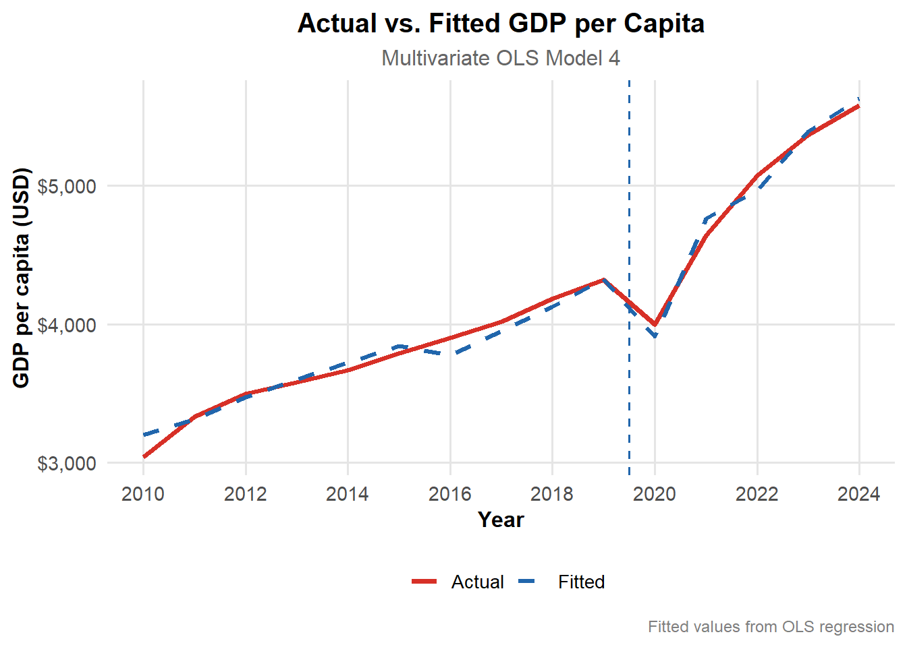

For decades, extreme gang violence fundamentally constrained El Salvador’s economic development. Criminal organizations such as MS-13 and Barrio 18 fragmented labor markets by controlling territory, making free movement dangerous and investment unattractive. This study examines the economic consequences of the dramatic reduction in gang control following the government’s security crackdown, Plan Control Territorial, initiated in 2019. Using national economic data spanning 2010 to 2024, a mixed-methods approach combining multivariate OLS regression, ARIMA time-series forecasting, and Economic Complexity diagnostics reveals a strong empirical link between the restoration of free movement and measurable economic growth. Key findings include a statistically significant post-intervention GDP premium of approximately $1,417 USD per capita, sustained growth in tourism and remittances, and an emerging diversification toward higher-complexity manufacturing exports.
1. Introduction
El Salvador presents one of the most striking natural experiments in recent development economics. For over a decade, the country recorded some of the highest homicide rates in the world, peaking at 107.6 intentional killings per 100,000 inhabitants in 2015. These were not merely statistics of human tragedy, they were structural economic constraints. When gangs control neighborhoods and streets, labor cannot move freely to where it is most productive.
The theoretical motivation draws on the economics of labor mobility and productive complexity. When movement is restricted by violence, labor markets fragment geographically, preventing workers from reaching firms and firms from accessing the full labor pool.
2. Data and Methodology
2.1 Data Sources
The analysis draws on annual panel data (2010–2024) with security indicators extended to 2025. Data was sourced from the World Bank, ISSS, PNC, UN COMTRADE, and UNCTAD.
2.2 Analytical Strategy
The analysis proceeds in three stages:
Descriptive Visualization: Documenting trends in key indicators.
Multivariate OLS Regression: Estimating GDP per capita as the dependent variable.
ARIMA Time-Series: Generating conditional forecasts for 2025–2027.
3. Descriptive Evidence
3.0 Understanding the Trends: Breaking Down the Security Wall
To understand these results, let’s imagine that a country’s economy is like a massive plumbing system. For decades, gang violence acted like heavy clogs in the pipes. When gangs control a neighborhood, they don’t just commit crimes; they create invisible borders.
The data shows that the murder rate dropped from a peak of 107.6 (in 2015) to just 1.3 per 100,000 people. For a non-statistician, this means the danger tax people paid just to exist is gone.
Because these invisible borders are gone, the”Formal Employment Rate jumped by 36%. Think of it this way: previously, a talented worker might have lived in one neighborhood but couldn’t take a high-paying job three miles away because they would have to cross gang territory. Now, that worker can travel safely. This is Labor Mobility, the ability of a person to take the best job they qualify for, regardless of where it is located.
3.1 The Security Transformation
The collapse of the homicide rate from 107.6 in 2015 to approximately 1.3 by 2025 is unprecedented in modern criminological literature.
Code
# G1: Homicide Rate Trend df_hom <- df %>%filter(!is.na(homicides))g1 <-ggplot(df_hom, aes(x = year, y = homicides)) +annotate("rect", xmin =2019.5, xmax =Inf,ymin =-Inf, ymax =Inf, alpha =0.12, fill = col_post) +geom_vline(xintercept =2019.5, linetype ="dashed",color = col_post, linewidth =0.7) +geom_area(fill = col_pre, alpha =0.25) +geom_line(color = col_pre, linewidth =1.4) +geom_point(aes(color =ifelse(year >=2020, "Post-2019", "Pre-2019")),size =3) +scale_color_manual(name ="", values =c("Pre-2019"= col_pre, "Post-2019"= col_post)) +scale_x_continuous(breaks =2010:2025) +annotate("text", x =2021.5, y =90, label ="Security\nIntervention",color = col_post, fontface ="bold", size =3.5) +labs(title ="Intentional Homicide Rate – El Salvador",subtitle ="Per 100,000 inhabitants, 2010–2025",x ="Year", y ="Homicides per 100k",caption ="Source: World Bank / National Police Data") +theme_poster()g1

3.2 GDP and Growth
GDP per capita recovery was sharp following the 2020 COVID-19 shock, reaching $5,580 by 2024.
Code
# --- G2: GDP Per Capita -------------------------------------------------------df_gdp <- df %>%filter(!is.na(gdp_pc))g2 <-ggplot(df_gdp, aes(x = year, y = gdp_pc)) +annotate("rect", xmin =2019.5, xmax =Inf,ymin =-Inf, ymax =Inf, alpha =0.12, fill = col_post) +geom_vline(xintercept =2019.5, linetype ="dashed",color = col_post, linewidth =0.7) +geom_line(color ="#1a9641", linewidth =1.4) +geom_point(size =2.8, color ="#1a9641") +scale_x_continuous(breaks =seq(2010, 2024, 2)) +scale_y_continuous(labels =dollar_format(prefix ="$")) +labs(title ="GDP Per Capita – El Salvador",subtitle ="Current USD, 2010–2024",x ="Year", y ="GDP per capita (USD)",caption ="Source: World Bank National Accounts") +theme_poster()print(g2)
Investment often takes longer to materialize than consumer behavior or tourism. An investor needs to build a factory, hire staff, and navigate bureaucracy, whereas a tourist simply needs to book a flight. Therefore, the FDI peaks in 2022 and 2024 likely reflect the delayed realization of the safety improvements initiated in 2019.
Code
# G4: FDI (% of GDP) df_fdi <- df %>%filter(!is.na(fdi_pct))g4 <-ggplot(df_fdi, aes(x = year, y = fdi_pct)) +annotate("rect", xmin =2019.5, xmax =Inf,ymin =-Inf, ymax =Inf, alpha =0.12, fill = col_post) +geom_vline(xintercept =2019.5, linetype ="dashed",color = col_post, linewidth =0.7) +geom_line(color ="#7b2d8b", linewidth =1.3) +geom_point(size =2.5, color ="#7b2d8b") +scale_x_continuous(breaks =seq(2010, 2024, 2)) +labs(title ="Foreign Direct Investment – El Salvador",subtitle ="% of GDP, 2010–2024",x ="Year", y ="FDI (% of GDP)",caption ="Source: World Bank / UNCTAD") +theme_poster()g4

3.4 Tourism and Remittances
Tourism surged to 4.0 million visitors by 2024. Remittances as a share of GDP peaked near 26% in 2021, reflecting both diaspora confidence and COVID-era support.
Code
# G7: Tourism Arrivals df_tour <- df %>%filter(!is.na(tourism_M))g7 <-ggplot(df_tour, aes(x = year, y = tourism_M)) +annotate("rect", xmin =2019.5, xmax =Inf,ymin =-Inf, ymax =Inf, alpha =0.12, fill = col_post) +geom_vline(xintercept =2019.5, linetype ="dashed",color = col_post, linewidth =0.7) +geom_area(fill ="#4dac26", alpha =0.25) +geom_line(color ="#4dac26", linewidth =1.3) +geom_point(size =2.5, color ="#4dac26") +scale_x_continuous(breaks =seq(2010, 2025, 2)) +annotate("text", x =2020, y =0.4, label ="COVID-19\nCrash",size =3, color ="grey40", fontface ="italic") +labs(title ="International Tourism Arrivals – El Salvador",subtitle ="Millions of visitors, 2010–2025",x ="Year", y ="Arrivals (Millions)",caption ="Source: World Bank / UNWTO") +theme_poster()g7

Code
# G10: Remittances (% of GDP)df_rem <- df %>%filter(!is.na(remit_pct))g10 <-ggplot(df_rem, aes(x = year, y = remit_pct)) +annotate("rect", xmin =2019.5, xmax =Inf,ymin =-Inf, ymax =Inf, alpha =0.12, fill = col_post) +geom_vline(xintercept =2019.5, linetype ="dashed",color = col_post, linewidth =0.7) +geom_line(color ="#1b7837", linewidth =1.3) +geom_point(size =2.5, color ="#1b7837") +scale_x_continuous(breaks =seq(2010, 2024, 2)) +scale_y_continuous(labels =function(x) paste0(x, "%")) +labs(title ="Personal Remittances – El Salvador",subtitle ="% of GDP, 2010–2024",x ="Year", y ="Remittances (% of GDP)",caption ="Source: World Bank") +theme_poster()g10

3.5 Correlation Structure
The correlation matrix reveals a strong negative link between homicides and GDP per capita (\(r = -0.74\)) and a strong positive link between wealth and formalization (\(r = 0.82\)).
# G11: Homicide vs GDP Per Capita (scatter)df_scatter <- df %>%filter(!is.na(homicides) &!is.na(gdp_pc) & year <=2024)g11 <-ggplot(df_scatter,aes(x = homicides, y = gdp_pc,color =factor(ifelse(year >=2020, "Post-2019", "Pre-2019")),label = year)) +geom_point(size =4, alpha =0.85) +geom_text_repel(size =3, max.overlaps =20) +geom_smooth(data = df_scatter, aes(x = homicides, y = gdp_pc),method ="lm", se =TRUE, inherit.aes =FALSE,color ="grey40", linetype ="dashed", linewidth =0.9) +scale_color_manual(name ="Period",values =c("Pre-2019"= col_pre, "Post-2019"= col_post)) +scale_x_continuous(labels = comma) +scale_y_continuous(labels =dollar_format(prefix ="$")) +labs(title ="Homicide Rate vs. GDP Per Capita",subtitle ="Each point = one year; dashed line = OLS fit",x ="Homicides per 100,000",y ="GDP per capita (USD)",caption ="Source: World Bank") +theme_poster()print(g11)

3.6 Formal Employment and Gender
The formal employment rate climbed above 48.8% post-intervention. This supports the hypothesis that reduced insecurity allowed workers, particularly women, to enter formal labor markets previously inaccessible due to gang-controlled transit routes.
Code
# G5: Formal Employment Ratedf_emp <- df %>%filter(!is.na(formal_emp_pct))g5 <-ggplot(df_emp, aes(x = year, y = formal_emp_pct)) +annotate("rect", xmin =2019.5, xmax =Inf,ymin =-Inf, ymax =Inf, alpha =0.12, fill = col_post) +geom_vline(xintercept =2019.5, linetype ="dashed",color = col_post, linewidth =0.7) +geom_line(color ="#d6604d", linewidth =1.3) +geom_point(size =2.5, color ="#d6604d") +scale_y_continuous(labels =function(x) paste0(x, "%")) +scale_x_continuous(breaks =seq(2010, 2024, 2)) +labs(title ="Formal Employment Rate – El Salvador",subtitle ="% of total employment, 2010–2024",x ="Year", y ="Formal Employment (%)",caption ="Source: ISSS / World Bank") +theme_poster()g5
The share of high-tech exports grew from 14.9% (2019) to 19.1% (2024), suggesting early-stage diversification into more complex productive activities.
The findings show that high-tech exports rose to 19.1% of medium/high tech manufactured goods. As a country starts making more complex things, it requires more educated workers, which leads to higher salaries. The Free Movement is the key here since you can’t build a high-tech factory if your engineers and technicians are afraid to commute to work.
The centerpiece of the analysis is a statistical finding called the “Post-2019 Dummy Coefficient.” In simple terms, this is the “Security Dividend.”
After accounting for every other factor—like international trade and remittances, the math shows that the mere fact that the country became safe added $1,417 to the average person’s share of the economy or GDP per capita.
Example: Imagine two identical stores. - Store A is in a high-crime area and spends thousands on armed guards and insurance. - Store B is in a safe area and spends that same money on better products and more staff.
Store B is naturally wealthier. That $1,417 represents the money El Salvador is “saving” and “earning” now that it isn’t spending its energy and resources on surviving a conflict.
4.1 Model Specifications
Four nested OLS models were estimated. Model 1 serves as the baseline (homicides only). Model 2 adds FDI and formalization. Model 3 incorporates the full set of economic controls (remittances, hi-tech exports, and tourism). Model 4 introduces the binary post-2019 dummy to capture the structural break associated with the security intervention.
Model 1 (The Base): We look only at the relationship between crime (homicides) and wealth.
Model 2 (The Market): we add Foreign Investment and Employment.
Model 3 (The Full View): We add Tourism, Remittances, and Hi-Tech exports.
Model 4 (The Big Shift): We add a “Security Dummy.” This is a specific marker for everything that changed after 2019 (Plan Control Territorial).
4.2 Model Fit and Selection
Model fit improved with each addition. While the baseline (M1) explained 51.5% of the variance, the full multivariate Model 4 achieved an adjusted \(R^2\) of 0.976 and the lowest AIC (191.67), indicating that the structural break dummy captures essential shifts in labor mobility not found in economic variables alone.
Table 4.2: Model Performance Comparison (Identifying the Security Dividend)
Model Performance Comparison: Identifying the Security Dividend
Model.Step
AIC
BIC
Adj_R2..Accuracy.
1. Baseline
234.0
236.1
0.515
2. + Market Data
227.3
230.9
0.718
3. Full Economic
204.9
210.5
0.942
4. Full + Security Shift
191.7
198.0
0.976
4.3 Key Findings
The research identifies Tourism as the most powerful engine for growth. The statistics show that for every 1 million additional tourists who visit, the average income per person in the country rises by $806.
Tourism is unique because it requires Physical Trust. You don’t buy a vacation to a place you are afraid to walk in. When a tourist visits, they spend money on a wide variety of local businesses:
Transport: Taxis and shuttles.
Food: Local restaurants and markets.
Services: Guides, hotels, and artisans.
This creates a Multiplier Effect. The $806 isn’t just the price of a hotel room; it’s the money the hotel owner then spends on a local carpenter, who then spends it at a grocery store.
Tourism is the strongest precisely estimated positive predictor: each additional million international visitors is associated with approximately $806 more in GDP per capita.
The post-2019 dummy captures a structural GDP premium of $1,417.
# G15: Actual vs Fitted (Model 4) df_reg$fitted <-fitted(model4)df_reg$resid <-residuals(model4)g15 <-ggplot(df_reg, aes(x = year)) +geom_line(aes(y = gdp_pc, color ="Actual"), linewidth =1.3) +geom_line(aes(y = fitted, color ="Fitted"), linewidth =1.1, linetype ="dashed") +geom_vline(xintercept =2019.5, linetype ="dashed",color = col_post, linewidth =0.7) +scale_color_manual(name ="", values =c("Actual"= col_pre, "Fitted"= col_post)) +scale_y_continuous(labels =dollar_format(prefix ="$")) +scale_x_continuous(breaks =seq(2010, 2024, 2)) +labs(title ="Actual vs. Fitted GDP per Capita",subtitle ="Multivariate OLS Model 4",x ="Year", y ="GDP per capita (USD)",caption ="Fitted values from OLS regression") +theme_poster()g15

4.4 Regression Diagnostics
We use the Variance Inflation Factor (VIF) to see if our ingredients are overlapping. A VIF score above 5 or 10 suggests that two variables are telling the same story, which is why we interpret Hi-Tech exports with caution.
Multicollinearity remains a concern; the VIF for high-tech exports exceeds 82, suggesting individual coefficient interpretation for that variable should be cautious.
The report uses a tool called ARIMA Forecasting. Think of this like a car’s GPS. The GPS looks at how fast you’ve been driving for the last ten miles to predict exactly when you’ll arrive at your destination.
The GPS for El Salvador’s economy predicts that if the current speed of growth and safety continues, the average income per person will reach approximately $6,124 by 2027. This is significant because it moves the country into a different category of economic stability, making it more attractive for large international companies to build factories and offices there.
Table 5.1: Historical GDP per Capita Timeline (2010–2024)
This table acts as the performance log for El Salvador’s economy over the last 15 years. It tracks the average share of the country’s economic output per person in U.S. Dollars.
For nearly a decade, the economy grew slowly, with average income rising gradually from $3,040 to $4,320.
You can clearly see the impact of the COVID-19 pandemic, where wealth dropped to $3,997 as the world economy stalled.
This is the most critical part of the data. Following the restoration of free movement and security stabilization, the economy didn’t just recover, it accelerated. By 2024, the average income reached $5,579, representing a faster and more sustained growth climb than anything seen in the previous decade.
Code
# TIME-SERIES MODEL# Use GDP per capita as the main time series (complete 2010-2024)gdp_ts <-ts(df %>%filter(!is.na(gdp_pc) & year <=2024) %>%pull(gdp_pc),start =2010, frequency =1)gdp_table <-data.frame(Year =as.numeric(time(gdp_ts)),`GDP per Capita (USD)`=as.numeric(gdp_ts))kable(gdp_table, caption ="Historical GDP per Capita Timeline (2010-2024)") %>%kable_styling(bootstrap_options =c("striped", "hover", "condensed")) %>%scroll_box(height ="300px")
Historical GDP per Capita Timeline (2010-2024)
Year
GDP.per.Capita..USD.
2010
3040.073
2011
3330.600
2012
3497.913
2013
3582.267
2014
3666.012
2015
3790.341
2016
3901.340
2017
4020.127
2018
4183.546
2019
4320.117
2020
3997.193
2021
4642.607
2022
5074.602
2023
5365.445
2024
5579.660
Table 5.2: Stationarity Stress Test (ADF - Original Series)
Before using data to predict the future, we have to perform a Stress Test called the Augmented Dickey-Fuller (ADF) test. This test determines if our data is stable or if it is heavily influenced by a long-term trend.
The p-value here is 0.9534. In the world of statistics, any number higher than 0.05 means the data has a strong, upward trend. This tells us that we cannot use simple math for our forecast, we need a more advanced model (ARIMA) that is designed to handle this kind of momentum.
Table 5.3: Stationarity Stress Test (ADF - First-Differenced Changes)
Here, we stopped looking at the total wealth and started looking only at the yearly change or the speed of growth. The p-value dropped to 0.4586, which shows that the growth itself is becoming more consistent, though it still carries the weight of the country’s recent rapid transformation.
Code
# Differenced seriesgdp_diff <-diff(gdp_ts)# Running the stress test on the "changes"adf_diff <-adf.test(gdp_diff)# Organizing the results into a professional tableadf_diff_df <-data.frame(Test ="ADF on First-Differenced Series",`Test Statistic`= adf_diff$statistic,`Lag Order`= adf_diff$parameter,`p-value`=round(adf_diff$p.value, 4))kable(adf_diff_df, caption ="Stationarity Stress Test (First-Differenced Changes)") %>%kable_styling(bootstrap_options =c("striped", "hover", "condensed")) %>%row_spec(1, bold = T, color ="white", background ="#2166AC")
Stationarity Stress Test (First-Differenced Changes)
Test
Test.Statistic
Lag.Order
p.value
Dickey-Fuller
ADF on First-Differenced Series
-2.29868
2
0.4586
Table 5.4: ARIMA Model Coefficients
The ARIMA model is essentially the engine of our Economic GPS. It looks at past patterns to find the underlying rhythm of the economy.
The drift ($181.39): This is the most important number in this table. It represents the natural upward push of the economy.
The model has calculated that, on average, the current economic environment is adding $181.40 every year to the average citizen’s wealth, purely based on the momentum created by recent safety and mobility improvements.
Code
# Auto-select ARIMAarima_model <-auto.arima(gdp_ts, stepwise =FALSE, approximation =FALSE)# Extracting model coefficients for the tablearima_coefs <-data.frame(Parameter =names(arima_model$coef),Estimate =as.vector(arima_model$coef))kable(arima_coefs, caption ="ARIMA Model Coefficients (The Forecasting Engine)") %>%kable_styling(bootstrap_options =c("striped", "hover", "condensed"))
ARIMA Model Coefficients (The Forecasting Engine)
Parameter
Estimate
drift
181.399
Table 5.4: Residual Diagnostic
After building our forecast model, we perform one final quality check called the Ljung-Box test. We want to make sure that our model has captured all the useful information and hasn’t left any important patterns behind.
The Confidence Score (p-value: 0.9947): This is an exceptionally high score. It means our model is clean. It confirms that there are no hidden patterns or information leaks left in the data. You can trust that the forecast is based on the actual structural changes in the economy, not on random noise or errors.
Code
# Ljung-Box test on residualslb_test <-Box.test(residuals(arima_model), lag =5, type ="Ljung-Box")lb_df <-data.frame(`Test Metric`="Ljung-Box (Chi-Squared)",`X-squared`= lb_test$statistic,df = lb_test$parameter,`p-value`=round(lb_test$p.value, 4))kable(lb_df, caption ="Residual Diagnostic: Ensuring No Information Leakage") %>%kable_styling(bootstrap_options =c("striped", "hover", "condensed"))
Residual Diagnostic: Ensuring No Information Leakage
Test.Metric
X.squared
df
p.value
X-squared
Ljung-Box (Chi-Squared)
0.4208839
5
0.9947
Table 5.5: Economic Projections (GDP per Capita 2025–2027)
This table shows where El Salvador is headed if the current environment of security and free movement remains stable.
The Point Forecast: The model predicts that the average income will reach $6,123.86 by 2027. This would be a historic milestone for the country.
The Margin of Safety (Lo/Hi 80 & 95): Because the future is never 100% certain, the model provides a range.
The 80% Range: A more focused prediction.
The 95% Range: A broader, more cautious prediction that accounts for unexpected global events.
Even in the most cautious Low 95 scenario, the economy stays well above pre-2019 levels. This suggests that the Security Dividend has created a new, higher floor for the country’s prosperity.
Code
# Forecast 3 years (2025–2027)fc <-forecast(arima_model, h =3)fc_table <-as.data.frame(fc)fc_table$Year <-2025:2027fc_table <- fc_table[, c(6, 1:5)] # Moving Year to the first columnkable(fc_table, col.names =c("Year", "Point Forecast", "Lo 80", "Hi 80", "Lo 95", "Hi 95"),caption ="Economic GPS Projections: GDP per Capita 2025-2027") %>%kable_styling(bootstrap_options =c("striped", "hover", "condensed")) %>%row_spec(1:3, bold = T, background ="#e6f2ff")
Economic GPS Projections: GDP per Capita 2025-2027
Year
Point Forecast
Lo 80
Hi 80
Lo 95
Hi 95
2025
2025
5761.059
5487.801
6034.317
5343.146
6178.971
2026
2026
5942.458
5556.012
6328.903
5351.440
6533.475
2027
2027
6123.857
5650.560
6597.154
5400.011
6847.702
Code
# G17: ARIMA Forecastfc_df <-data.frame(year =2025:2027,mean =as.numeric(fc$mean),lo80 =as.numeric(fc$lower[, 1]),hi80 =as.numeric(fc$upper[, 1]),lo95 =as.numeric(fc$lower[, 2]),hi95 =as.numeric(fc$upper[, 2]))hist_df <-data.frame(year =as.numeric(time(gdp_ts)),actual =as.numeric(gdp_ts))g17 <-ggplot() +annotate("rect", xmin =2019.5, xmax =Inf,ymin =-Inf, ymax =Inf, alpha =0.08, fill = col_post) +geom_ribbon(data = fc_df,aes(x = year, ymin = lo95, ymax = hi95),fill = col_post, alpha =0.20) +geom_ribbon(data = fc_df,aes(x = year, ymin = lo80, ymax = hi80),fill = col_post, alpha =0.30) +geom_line(data = hist_df,aes(x = year, y = actual), color = col_pre, linewidth =1.3) +geom_point(data = hist_df,aes(x = year, y = actual), color = col_pre, size =2.5) +geom_line(data = fc_df,aes(x = year, y = mean), color = col_post,linewidth =1.2, linetype ="dashed") +geom_point(data = fc_df,aes(x = year, y = mean), color = col_post, size =3) +scale_y_continuous(labels =dollar_format(prefix ="$")) +scale_x_continuous(breaks =seq(2010, 2027, 2)) +labs(title =paste0("ARIMA GDP per Capita Forecast – El Salvador"),subtitle =paste0("Model: ", arima_model$arma |>toString()," | Shaded = 80% & 95% CI | Forecast: 2025–2027"),x ="Year", y ="GDP per capita (USD)",caption ="Auto-ARIMA via forecast package") +theme_poster()print(g17)
Findings support the interpretation that security is economic infrastructure. The restoration of free movement unlocked activity previously suppressed by gang-enforced territorial borders.
The results identify tourism as the dominant channel through which security translates into growth. Tourism is labor-intensive and hypersensitive to mobility; for visitors to arrive and workers to staff establishments, territorial gang control had to be dismantled. Remittances also appear as a significant predictor, likely reflecting a diaspora confidence effect as security conditions improved, allowing more capital to flow back into domestic consumption.
6.2 Limitations
The study is limited by a small sample size (15 observations). Multicollinearity suggests that individual coefficients, particularly formal employment and high-tech exports, should be interpreted with caution.
7. Conclusions
This study provides empirical evidence that security stabilization is a fundamental prerequisite for development. While removing restrictions was vital for immediate growth, long-term success depends on urgent investment in fiscal sustainability and social rehabilitation to ensure current gains lead to structural transformation.